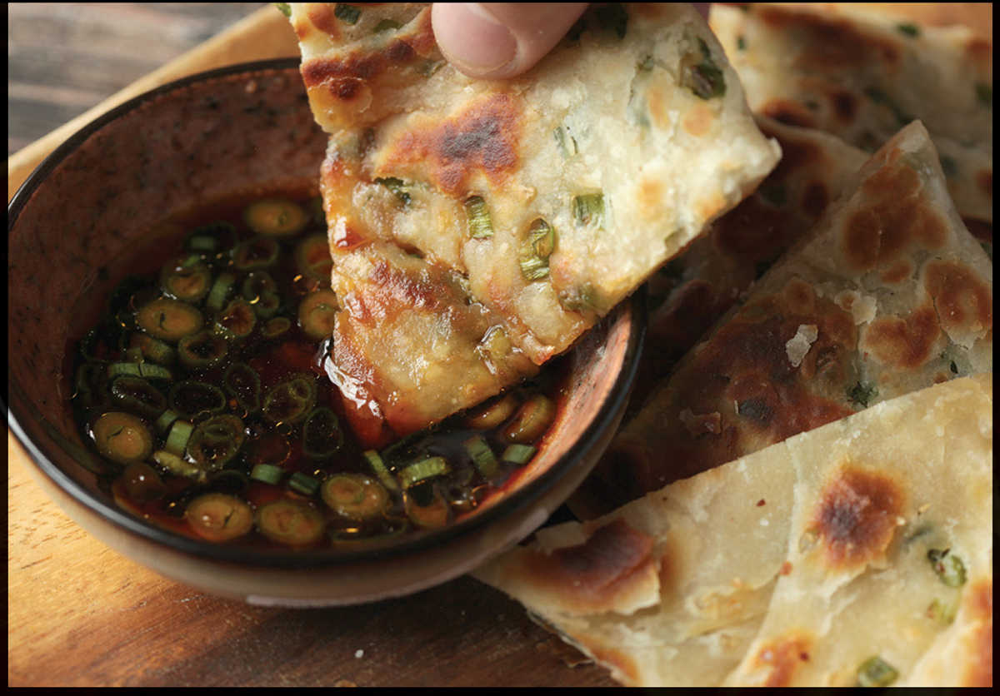

How to Make Extra-Flaky Chinese-Style Scallion Pancakes (Cong You Bing)

Cong you bing (“scallion oil cakes”—i.e., flaky panfried scallion pancakes) were one of the first things I ever taught myself how to cook, way back in high school. Or, I should say, I thought I taught myself how to cook them. I mean, fried dough and scallions, right? How hard could it be?
Of course, at the time I knew nothing of gluten development, laminated pastries, or the like, and the dense, doughy blobs I was coming up with were certainly nowhere near the ideal flaky, crisp, light, multilayered affairs that the best Chinese restaurants serve. But due to an acute case of a horrible syndrome known in medical circles as Imadethismyselfsoitmusttasteawesomosis, I was totally oblivious to my quite obvious failure.
Here’s what I did, in six easy steps:
Step 1: Combine flour and water until workable dough is formed.
Step 2: Knead a lot (I heard that kneading is good).
Step 3: Add scallions.
Step 4: Knead some more.
Step 5: Roll out with a rolling pin and fry.
Step 6: Serve with tons of salt, vinegar, and soy sauce to distract from leaden texture.
Fast-forward five or six years to me sitting in the living room watching an episode of Yan Can Cook, my mind rapidly being blown. This episode? Scallion pancakes, the way they’re supposed to be made. The process is honestly quite simple, and ingenious. It combines two unique features: hot water dough and lamination. Here’s how they work.
HOT WATER DOUGH
With most Western breads and pastries, cold or room-temperature liquid is added to flour before kneading it to develop gluten, the protein network that gives bread its springy, elastic structure. A ball of well-kneaded cold water dough will spring back if you press it and contract if you stretch it. This is why, for example, pizza dough is extremely hard to roll out until it’s had at least a couple hours to rest and allow this gluten to relax.
Hot water doughs—the type used to make scallion pancakes, dumpling wrappers, Mandarin pancakes, and several other Chinese pastries—work a little differently. By adding boiling water directly to flour, you actually end up not only denaturing the proteins but smashing them into small pieces. Some degree of gluten can still form, but because cooked proteins aren’t nearly as stretchy or clingy as raw ones, you won’t get anywhere near the stretch or elasticity of a cold-water dough.
If airy, hole-filled bread is your goal, this is a bad thing. If, on the other hand, you’re looking for tender dumpling wrappers or scallion pancakes with just a bit of tug and chew, that’s precisely what you want. The beauty of a hot water dough is that it doesn’t bounce back as much as a cold water dough does. This makes it extremely easy to work with and roll out. Think: play-dough. A positive boon when you’ve got fifty dumpling wrappers to form or when you’re making scallion pancakes.
The other interesting part of scallion pancakes is the rolling method.
LAMINATED PASTRIES
Though the most famous laminated pastry in the world is probably the croissant, I’d venture to guess that scallion pancakes are the most widely consumed. What exactly is a laminated pastry? Well, unlike bread leavened biologically with yeast or quick breads leavened chemically with baking soda or baking powder, a laminated dough is leavened via fat and vapor. It consists of two basic elements: layers of lean dough separated by layers of fat.
The lean dough can be either completely unleavened (as with puff pastry, scallion pancakes, phyllo, or pâte a brick), leavened with yeast (as with croissants and Danish), or leavened with baking powder (as with some types of flaky, layered biscuits), each one giving you a slightly different end result. Likewise, the fat layers can be any number of fats, such as olive oil (for certain phyllo recipes), butter (for puff pastry), or, for the case of scallion pancakes, a thin sesame oil and flour paste.
The idea is that the increasingly thin layers of pastry separated with equally thin layers of fat, will separate and puff as water converts to steam and expands between the layers. It’s this separating that creates the flaky, tender structure of perfect laminate pastry. With some laminate pastries, these layers are created linearly. Phyllo, for example, is built up one layer at a time, the cook manually brushing butter or oil onto each sheet before laying on the next. It’s a relatively easy but time-consuming process.
Others, like puff pastry, use the power of mathematics to very quickly build up hundreds, or even thousands, of layers. Here’s how it works: A thin, even slab of butter is placed on top of a layer of dough, which is then folded over the butter to completely enclose it like an envelope. Next, the entire thing gets folded into thirds and then rolled out again into the same size and shape—where you once had one layer, now you’ve got three. Repeat this process again, and you’re up to nine layers. Most puff pastry recipes recommend a bare minimum of four folding iterations, giving you a total of 81 layers. With extremely careful handling and a cold marble surface to work on, you can fold up to eight times, which gets you a whopping 6,561 layers. Yay math!
Scallion pancakes are made by a similar method. Rather than folding over and over, the flat disks of dough are first brushed with sesame oil and flour paste, sprinkled with scallions, then rolled up, jelly-roll style. After rolling, you coil the log like a rattle-snake before flattening it out again, this time with the scallions tucked nearly inside. This technique gives you roughly three to five layers of dough. A quick fry in hot oil later and you’re done. Crispy, slightly chewy, flaky, and delicious.
Want even more layers? No problem: just repeat the process to increase the number of layers by the power of two. Roll with a rolling pin into a flat circle, brush with the oil mixture, roll up like a jelly roll, coil like a snake, roll with a rolling pin a second time, brush with more oil mixture, spread with scallions, roll up like a jelly roll and coil like a snake again, then finally roll it out a third time and panfry it.
Moderate heat with a good amount of oil and constant swirling is the best way to get even browning and discrete, flaky layers.